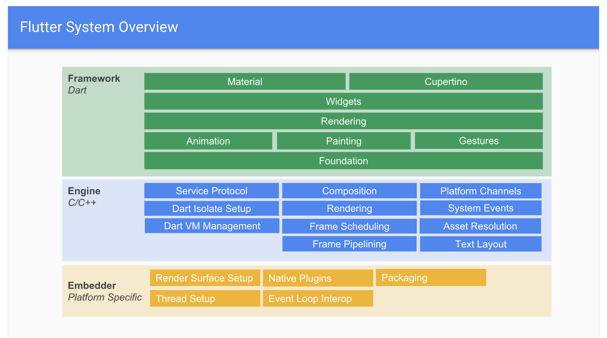
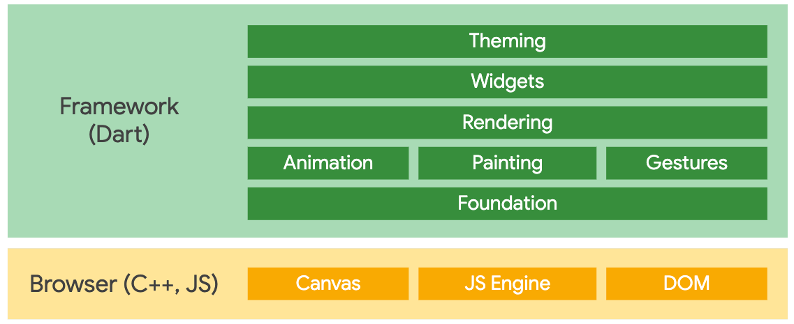

说说你对flutter的了解
参考答案
## 起源
我们从官网的介绍开始说起。
Flutter is Google’s UI toolkit for building beautiful, natively compiled applications for mobile, web, and desktop from a single codebase.
Flutter 是 Google 的 UI 工具包，用于从单个代码库构建漂亮的、本地编译的移动、web 和桌面应用程序。
所以正如我们（看了很多网上的文章后）所知，Flutter是一个开源的、跨平台的UI框架，用它开发的应用程序都具有高保真度和高性能表现。
但也许我们不知道或不太明白的是：
- 到底什么是UI框架?
- 到底什么是高保真度？
- 到底什么是高性能表现？
- Flutter是如何做到跨平台的？
- Flutter是如何做到高保真度的？
- Flutter是如何做到高性能表现的？
以上问题我们将各个击破，不过在开始前我们先插播一段Flutter背景简介\~
Flutter背景简介
Flutter的前身是 Google 内部孵化的Sky项目，于2014年10月在 GitHub 上开源一年后，于2015年10月正式更名为Flutter。
Flutter是众多跨平台框架中的一个，其不同之处在于采用了自绘UI+原生的实现方案，相比于H5+原生和JavaScript开发+原生渲染类的方案，这是一种更为彻底的方案，并且它天生具备两大优点：
- 在不同平台的 UI 表现可做到高保真度、高一致性
- 绘制 UI 的性能和原生控件接近
Flutter的目标在于做全平台！开发者只需使用同一套基准代码，便可为移动平台、桌面端和网页端开发应用。而目前来看Flutter所支持或将支持的平台已经有 Android、iOS、Fuchsia、Chrome OS，另外我认为未来支持鸿蒙OS（一款让我们引以为傲的操作系统）也必将是件水到渠成的事\~
更多背景相关知识我在拜读的文章中贴出了链接，大家可自行食用。
到底什么是UI框架?
我们把UI和框架拆开，分别来做解释。
UI是User Interface的缩写，是用户界面的意思，但在我们软件领域普遍的认识里，UI设计实际是指软件的人机交互、操作逻辑、界面美观性的整体设计，所以UI就是指软件的交互操作和视觉效果。
框架在百度百科上的释义如下（大家感受下）：
框架（framework）是一个框子——指其约束性，也是一个架子——指其支撑性。是一个基本概念上的结构，用于去解决或者处理复杂的问题。
而在我们软件领域，框架可以理解为是一个用来开发软件的工具包，它已处理好了通用的、基础性的工作，并且制定好了使用规则。
所以总结一下，UI框架就是指用来开发软件的工具包，且该软件可以带有交互操作和美观的视觉效果。
到底什么是高保真度？
（这词乍一看怪吓人的，让人头皮发麻，萌生吐意🤮，谁叫我不是厦大的呢？）
高保真是声音技术领域的专业术语，是指与原来的声音高度相似的重放声音。
但在我们软件领域，高保真度其实就是高还原度的意思，旨在可以像素级还原UI稿的交互与视觉效果。
到底什么是高性能表现？
（以下说起性能的时候，都指的是在软件开发领域\~）
性能是个司空见惯的词，但性能到底是什么意思呢？可能在我们心中是既知道又说不清楚的含糊状态。
性能的英文是Performance，它也有表现、工作情况的意思。
当说起性能的时候，我们都能联想起一些关键词，比如：启动速度、内存使用优化、布局优化、电量优化、包瘦身等等。
所以综上可以感受出来，性能是一个软件多维度指标表现情况的代名词，高性能表现就是指软件各项指标都表现优异。（该快的快、该少的少、该大的大😁、该小的小）
Flutter是如何做到跨平台的？

这里搬出Flutter官方分层架构图，在大的层次上，从上到下依次分为如下三层（可以看出 Framework 层内部又会分层）：
- Framework框架层：一个纯
Dart实现的SDK（一套基础库），负责 UI 相关的事情，如：动画、widget、绘图、手势、基础能力等。（我们的应用就是围绕这层来构建的） - 在该层内部 Foundation 和 Animation、Painting、Gestures 对应的是 Flutter 中的
dart:ui包，它是 Flutter 引擎暴露的底层 UI 库，用来提供动画、手势及绘制等能力。 - Engine引擎层：一个纯
C++实现的SDK，主要包括 Skia 引擎（开源的二位图形库）、Dart 运行时、GC垃圾回收、编译模式支持、Text 文字排版引擎等。 - Embedder嵌入器层：见名知意是将 Flutter 移植到各平台的中间层代码，做好这一层的适配 Flutter 基本可以嵌入到任何平台上去。它主要包括渲染Surface设置、原生平台插件、打包、线程管理、事件循环交互操作等。
所以可以看出在设计上Embedder层要做的工作就是隔离并适配不同平台的差异，保证对上层暴露统一的API，以此来达到跨平台的目的。无论现在的Android、iOS还是未来的Fuchsia、鸿蒙OS，亦或是其他嵌入式操作系统（比如树莓派上的系统 Raspbian ），理论上 Flutter 都是可以跨上去的😎。
以上是针对跨操作系统而言的，在最近刚发步的 Flutter 1.9 中Flutter for web的支持虽然还处于预览版，但 flutter\_web 这个 repo 已经合并到了 flutter 的主 repo，这也是一个重要的里程碑了。那么Flutter是如何做到支持Web的呢？

如架构图所示，Framework 层在移动和 web 平台是共享的，当然为了支持 web ，官方对dart:ui库做了新的适配。然后便是使用基于 DOM、Canvas 和 CSS 的代码替换了移动平台上 Skia 实现的引擎层，当我们为 Web 平台编译 Flutter 代码时，应用、Flutter 框架、以及 Web 版本的 dart:ui 库都将编译为 JavaScript ，可以运行在任何现代浏览器上。
Flutter是如何做到高保真度的？
根据前文这个问题可以转化为：Flutter是如何做到可以像素级还原UI稿的交互与视觉效果的？
这点首先得益于选择了自绘UI的技术方向，基于这个方向 Flutter 在 Engine 层使用了跨平台自绘引擎Skia和文字排版引擎来做底层渲染（或是for web 的引擎代码），在 Framework 层构建了一整套自己的UI系统，而不依赖任何原生的控件。如此一来，布局、动画、手势、绘制等全权尽在掌控之中，要做到高保真也就手到擒来了。
下面引用《Flutter 实战》一书中，关于 Skia 的一段描述：
Flutter使用Skia作为其2D渲染引擎，Skia是Google的一个2D图形处理函数库，包含字型、坐标转换，以及点阵图都有高效能且简洁的表现，Skia是跨平台的，并提供了非常友好的API，目前Google Chrome浏览器和Android均采用Skia作为其绘图引擎。
Flutter是如何做到高性能表现的？
首先高或低是个相对的概念，而 Flutter 的高性能来自于两个比较：
以下两点引用自《Flutter 实战》一书<br><br>1. Flutter APP 采用 Dart 语言开发。Dart 在 JIT（即时编译）模式下，速度与 JavaScript 基本持平。但是 Dart 支持 AOT，当以 AOT 模式运行时，JavaScript 便远远追不上了。速度的提升对高帧率下的视图数据计算很有帮助。<br>2. Flutter 使用自己的渲染引擎来绘制 UI ，布局数据等由 Dart 语言直接控制，所以在布局过程中不需要像 RN 那样要在 JavaScript 和 Native 之间通信，这在一些滑动和拖动的场景下具有明显优势，因为在滑动和拖动过程往往都会引起布局发生变化，所以 JavaScript 需要和 Native 之间不停的同步布局信息，这和在浏览器中要 JavaScript 频繁操作 DOM 所带来的问题是相同的，都会带来比较可观的性能开销。